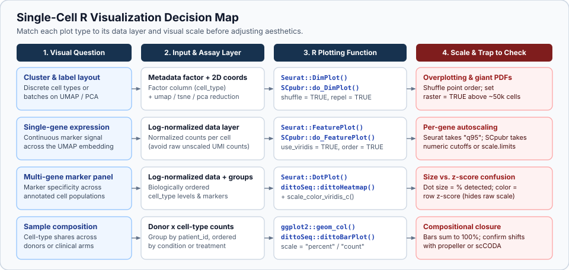
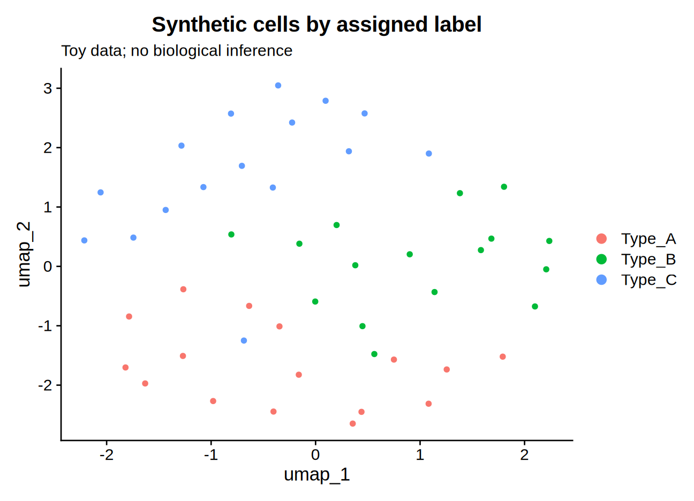
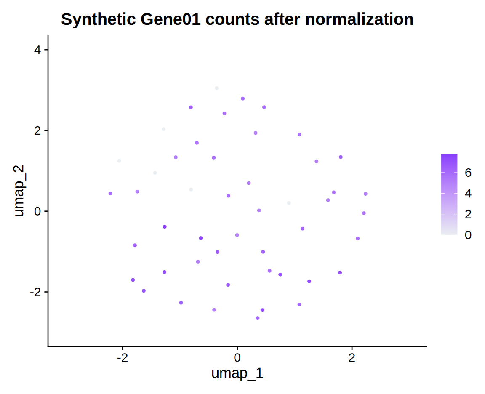
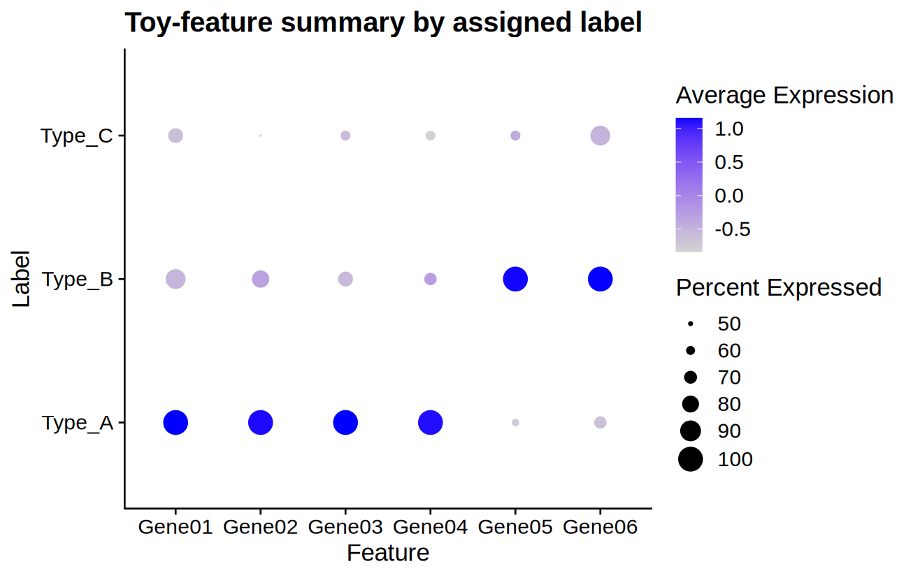
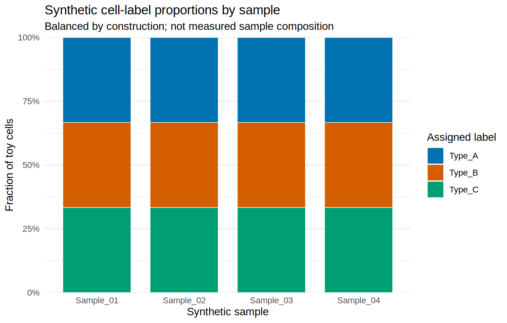
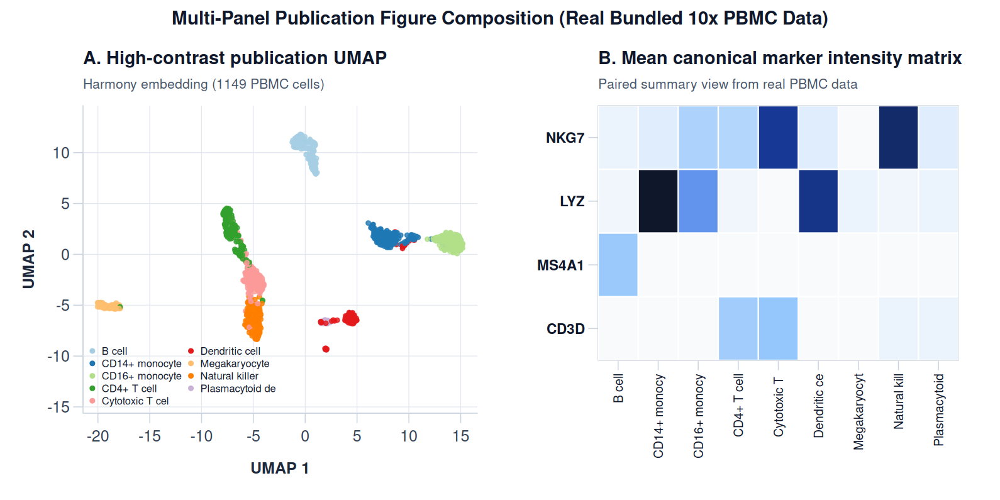

Visualizing Single-Cell Data with R Packages
Nasir Mahmood Abbasi, PhD
Bioinformatics Educator
Default Seurat plots work well for quick exploration, but turning them into clear publication figures requires matching each plot type to its data layer, using colour-vision-safe scales, and keeping legends comparable across panels. In about 30 minutes, you will run a self-contained Seurat and ggplot2 script that produces four core single-cell figures, then adapt templates for SCpubr, dittoSeq, and patchwork to your own QC-reviewed object.
Format: Executable core example plus advanced templates. The core script runs from the repository root on a 36-feature by 48-cell synthetic count and metadata fixture using only Seurat and ggplot2; those synthetic plots illustrate code mechanics and are not biological observations. The later SCpubr and dittoSeq blocks are adaptation templates for your own object and were not executed in this revision.
What you will learn and prerequisites
By the end of this lesson, you will be able to:
- Match categorical embeddings, continuous expression maps, multi-gene marker panels, and donor composition bars to the right R plotting function and assay layer.
- Control colour scales, quantile or numeric cutoffs, factor ordering, and rasterization so dense or skewed single-cell datasets stay readable.
- Assemble compatible
ggplotobjects withpatchwork, export grid-baseddittoSeqheatmaps cleanly, and diagnose common Seurat v5 plotting errors.
Prerequisites:
- Completed upstream scRNA-seq processing (cell/gene QC, normalization, PCA, clustering, and UMAP) as covered in Single-Cell RNA-seq Downstream Analysis.
- For the runnable core: R with
Seuratandggplot2(tested on R 4.3.3, Seurat 5.0.1, SeuratObject 5.0.1, ggplot2 3.4.4, and uwot 0.1.16). - For the optional wrapper templates: your own QC-reviewed Seurat object at
data/seurat_obj.rdscontaining metadata columns (cell_type,condition,patient_id) and aumapreduction, plusSCpubr,dittoSeq, andpatchwork.
1. Choosing the right plot type and package
Every single-cell figure answers one visual question: where cell states sit in low-dimensional space, where one gene is active, which genes distinguish clusters, or how cell-type shares vary across donors. Using the wrong visual encoding hides real biology or creates false patterns. For example, plotting raw UMI counts on a UMAP reflects sequencing depth rather than transcriptional identity, whereas per-gene autoscaling makes a noisy background gene look as bright as a canonical lineage marker.
Before writing plotting code, keep four terms straight:
- Assay layer (
datavs.counts): Seurat v5 stores raw integer UMI counts in thecountslayer and log-normalized counts in thedatalayer. Feature maps, dot plots, and heatmaps should read normalizeddataunless you are explicitly auditing UMI depth. - Cutoff clipping (
min.cutoff/max.cutoff): Clamping outliers at a high percentile (such as the 95th percentile) prevents a handful of ultra-high cells from compressing the rest of the colour gradient into near-zero grey. - Row z-score vs. max-scaling: Centering and scaling each gene across groups highlights relative cluster specificity, while erasing differences in absolute expression magnitude between lowly and highly expressed genes.
- Compositional closure: Within any sample, cell-type percentages must sum to 100%. An expansion in infiltrating neutrophils shrinks resident T-cell percentages even when absolute T-cell counts are unchanged.

SCpubr, dittoSeq, or custom ggplot2.| Package | Best used for | Key strength | Main watch-out |
|---|---|---|---|
Seurat + ggplot2 | Core UMAPs, feature maps, dot plots, and custom donor bar charts | Minimal dependencies, returns standard ggplot objects, supports quantile cutoffs ("q95") | Default palettes (such as two-colour grey-blue) and unshuffled point order often need manual overrides |
SCpubr | Styled UMAPs, feature maps, pathway/enrichment views, and dense multi-panel layouts | Clean defaults (shuffle = TRUE, clean axes, viridis options, cell borders) | min.cutoff and max.cutoff expect numeric values rather than "q95" strings; use scale.limits for unclipped legend bounds |
dittoSeq | Sample composition bar plots and multi-annotation gene heatmaps | Okabe-Ito-inspired colourblind-safe palette (dittoColors()) and accepts both Seurat and SingleCellExperiment | dittoHeatmap() returns a pheatmap list (export $gtable), not a ggplot; update to dittoSeq >= 1.14 for Seurat v5 Assay5 |
patchwork | Multi-panel figure assembly with shared legends and A/B/C tags | Operator syntax (+, /) and plot_layout(guides = "collect") | Grid graphics such as pheatmap gtables require wrap_elements() or separate PDF export |
2. Verified core route: Seurat and ggplot2 end-to-end
To verify your R environment without downloading a multi-gigabyte cohort, run the repository's self-contained core script. It builds a deterministic 36-feature by 48-cell fixture (seed 20261023; 16 cells per synthetic label across four balanced samples), writes synthetic_counts.csv and synthetic_metadata.csv, reloads both CSVs into a Seurat object, runs NormalizeData(), FindVariableFeatures(), ScaleData(), RunPCA(), and RunUMAP(), and writes four PNG figures.
Run the script from the repository root:
Rscript files/visualization-example/run_example.RRecorded execution output from files/visualization-example/run-evidence.txt (paths abbreviated to <repo-root>):
Warning: Data is of class matrix. Coercing to dgCMatrix.
Warning: The default method for RunUMAP has changed from calling Python UMAP via reticulate to the R-native UWOT using the cosine metric
To use Python UMAP via reticulate, set umap.method to 'umap-learn' and metric to 'correlation'
This message will be shown once per session
Warning: Scaling data with a low number of groups may produce misleading results
Completed synthetic Seurat/ggplot2 example.
Seed: 20261023
Cells: 48 Features: 36
Reductions: pca, umap
Figures:
<repo-root>/images/tutorial-figures/visualization-synthetic-umap.png
<repo-root>/images/tutorial-figures/visualization-synthetic-feature.png
<repo-root>/images/tutorial-figures/visualization-synthetic-dotplot.png
<repo-root>/images/tutorial-figures/visualization-synthetic-composition.png
Package versions:
Seurat 5.0.1
SeuratObject 5.0.1
ggplot2 3.4.4
uwot 0.1.16Check: The three startup warnings are expected here: Seurat coerces dense CSV counts to sparse dgCMatrix, uses R-native uwot for UMAP, and warns because 48 cells is intentionally tiny. Confirm the summary prints Cells: 48 Features: 36 and Reductions: pca, umap. Inspect the full R script, reproduction notes, execution log, R session info, counts CSV, and metadata CSV.
Below are the four core plotting calls inside run_example.R that produce the figures:
# Excerpt from files/visualization-example/run_example.R (Seurat + ggplot2 core)
p_umap <- Seurat::DimPlot(seurat_obj, reduction = "umap", group.by = "cell_type",
pt.size = 1.5) +
ggplot2::labs(title = "Synthetic cells by assigned label",
subtitle = "Toy data; no biological inference")
p_feature <- Seurat::FeaturePlot(seurat_obj, features = "Gene01", reduction = "umap",
cols = c("#E9EEF2", "#8A3FFC"), order = TRUE) +
ggplot2::labs(title = "Synthetic Gene01 counts after normalization")
p_dot <- Seurat::DotPlot(seurat_obj, features = sprintf("Gene%02d", 1:6),
group.by = "cell_type") +
ggplot2::labs(title = "Toy-feature summary by assigned label",
x = "Feature", y = "Label")
composition <- as.data.frame(table(sample_id = seurat_obj$sample_id,
cell_type = seurat_obj$cell_type),
stringsAsFactors = FALSE)
composition$proportion <- ave(composition$Freq, composition$sample_id,
FUN = function(x) x / sum(x))
p_composition <- ggplot2::ggplot(composition,
ggplot2::aes(x = sample_id, y = proportion, fill = cell_type)) +
ggplot2::geom_col(width = 0.78, color = "white", linewidth = 0.25) +
ggplot2::scale_y_continuous(labels = scales::percent, limits = c(0, 1),
expand = c(0, 0)) +
ggplot2::scale_fill_manual(values = c(Type_A = "#0072B2", Type_B = "#D55E00",
Type_C = "#009E73")) +
ggplot2::labs(title = "Synthetic cell-label proportions by sample",
subtitle = "Balanced by construction; not measured sample composition",
x = "Synthetic sample", y = "Fraction of toy cells",
fill = "Assigned label") +
ggplot2::theme_minimal(base_size = 11) +
ggplot2::theme(panel.grid.major.x = ggplot2::element_blank())These four synthetic panels illustrate plot layout and colour encoding only; they are not biological observations or evidence about real cell types.

DimPlot). 48 synthetic cells coloured by cell_type after log-normalization, variable-feature selection, scaling, and PCA.
FeaturePlot). Normalized Gene01 values rendered with order = TRUE so expressing cells draw on top of zero-count cells.
DotPlot). Dot size encodes percentage of cells with detected counts; colour encodes z-scored average expression across the three labels.
ggplot2::geom_col). Okabe-Ito colours across four balanced synthetic samples (33.3% per label by construction).3. Optional wrapper templates (not executed in this revision)
Once your own QC-reviewed Seurat object is ready at data/seurat_obj.rds, you can adapt the templates below using SCpubr, dittoSeq, and patchwork. The examples use canonical human PBMC markers (CD3D for T cells, NKG7 for NK/cytotoxic lymphocytes, MS4A1 for B cells, LYZ for classical monocytes/DCs, FCGR3A for CD16+ monocytes, and PPBP for megakaryocytes). These wrapper templates were not executed in this revision; verify package versions and your object's metadata columns, assay layers, and feature names before running them.
3.1 Install compatible packages in an isolated library
Install CRAN packages with install.packages() and Bioconductor packages (such as dittoSeq) with BiocManager::install() so Bioconductor matches your R version. For example, Bioconductor Release 3.24 targets R 4.6.0 or higher; on an existing project with an older R version, keep your project's established lockfile rather than upgrading packages mid-analysis.
# Run in R inside your project environment
install.packages(c("Seurat", "SCpubr", "ggplot2", "patchwork"))
if (!requireNamespace("BiocManager", quietly = TRUE)) install.packages("BiocManager")
BiocManager::install("dittoSeq")
stopifnot(all(vapply(c("Seurat", "SCpubr", "ggplot2", "patchwork", "dittoSeq"),
requireNamespace, logical(1), quietly = TRUE)))
dir.create("results", showWarnings = FALSE)
writeLines(capture.output(sessionInfo()), "results/session_info.txt")3.2 Load and validate your Seurat object
Fail fast if required metadata columns or reductions are missing. In Seurat v5, also check whether sample layers are still split inside the RNA assay; wrapper functions such as dittoHeatmap() expect unified counts and data layers, so run SeuratObject::JoinLayers() after integration if multiple data.* layers appear.
# Input: data/seurat_obj.rds with 'cell_type', 'condition', 'patient_id', and 'umap'
library(Seurat)
library(SCpubr)
library(dittoSeq)
library(ggplot2)
seurat_obj <- readRDS("data/seurat_obj.rds")
stopifnot(inherits(seurat_obj, "Seurat"))
required_meta <- c("cell_type", "condition", "patient_id")
missing_meta <- setdiff(required_meta, colnames(seurat_obj[[]]))
if (length(missing_meta)) stop("Missing metadata: ", paste(missing_meta, collapse = ", "))
if (!("umap" %in% SeuratObject::Reductions(seurat_obj))) stop("UMAP reduction not found")
# Seurat v5 check: if layers are split by sample, join them before downstream plotting
print(SeuratObject::Layers(seurat_obj[["RNA"]]))
# seurat_obj <- SeuratObject::JoinLayers(seurat_obj)3.3 Standardized categorical UMAP with SCpubr
Default scatter plots draw factor levels in order, so the last cluster plotted paints over earlier cells at cluster boundaries; SCpubr::do_DimPlot() avoids this by defaulting to shuffle = TRUE, dropping redundant axis ticks on UMAPs, and formatting legends cleanly.
dir.create("results", showWarnings = FALSE)
p_umap <- SCpubr::do_DimPlot(
sample = seurat_obj,
reduction = "umap",
group.by = "cell_type",
shuffle = TRUE, # avoid factor-order overplotting
label = TRUE,
repel = TRUE, # push overlapping cluster labels apart
font.size = 12,
legend.position = "right"
)
ggsave("results/umap_celltype.png", p_umap, width = 8, height = 6, dpi = 300)
ggsave("results/umap_celltype.pdf", p_umap, width = 8, height = 6)Check: For datasets above ~50,000 cells, pass raster = TRUE so vector PDFs stay small and quick to open in Illustrator or Inkscape. If repel = TRUE still leaves crowded labels on tiny subclusters, omit on-plot labels (label = FALSE) and rely on a well-ordered legend.
3.4 Feature expression map with explicit scale bounds
Single-cell expression counts often have a long right tail: if two cells have normalized expression of 6.5 while most expressing cells sit between 1.5 and 3.0, autoscaling compresses visual contrast across the rest of the cluster. Pairing a perceptually uniform sequential palette (use_viridis = TRUE, Crameri et al., 2020) with explicit bounds preserves that contrast.
feature <- "LYZ" # classical monocyte and dendritic-cell marker
stopifnot(feature %in% rownames(seurat_obj))
# Compute a numeric 95th-percentile cutoff (SCpubr expects numeric cutoffs, unlike Seurat's "q95")
expr_vals <- Seurat::FetchData(seurat_obj, vars = feature, layer = "data")[, 1]
q95_cutoff <- unname(stats::quantile(expr_vals, probs = 0.95))
# Guard sparse markers (<5% expressing cells, such as PPBP) where q95 equals 0
if (q95_cutoff <= 0) q95_cutoff <- max(expr_vals)
p_feat <- SCpubr::do_FeaturePlot(
sample = seurat_obj,
features = feature,
reduction = "umap",
use_viridis = TRUE,
viridis.palette = "D",
order = TRUE, # draw high-expressing cells on top
min.cutoff = 0,
max.cutoff = q95_cutoff, # clamp top 5% to preserve contrast; or use scale.limits = c(0, 4)
pt.size = 0.5
)
ggsave(sprintf("results/feature_%s.png", feature), p_feat, width = 6, height = 5, dpi = 300)Seurat vs. SCpubr cutoff trap: Seurat::FeaturePlot() accepts quantile strings such as max.cutoff = "q95", whereas SCpubr::do_FeaturePlot() expects numeric vectors for min.cutoff and max.cutoff (which clip cell values) or scale.limits = c(low, high) (which fixes legend limits across panels without altering underlying values). Always state in the figure caption whether values were clipped.
3.5 Marker specificity dot plot with Seurat and viridis
Seurat::DotPlot() encodes two distinct quantities at once: dot size shows the fraction of cells in a group with nonzero expression (controlled by dot.min and dot.scale), while dot colour shows the z-scored average expression across groups (scale = TRUE by default, clamped to [-2.5, 2.5]). Ordering both cell_type factor levels and marker genes biologically turns a scrambled grid into a clean diagonal block.
# Order cell types and canonical PBMC markers by lineage for a diagonal pattern
lineage_order <- c("CD4+ T cell", "Cytotoxic T", "NK cell",
"B cell", "CD14+ mono", "CD16+ mono",
"Dendritic cell", "Megakaryocyte")
observed_levels <- unique(as.character(seurat_obj$cell_type))
present_levels <- c(intersect(lineage_order, observed_levels),
setdiff(observed_levels, lineage_order))
seurat_obj$cell_type <- factor(seurat_obj$cell_type, levels = present_levels)
pbmc_markers <- c("CD3D", "NKG7", "MS4A1", "LYZ", "FCGR3A", "PPBP")
pbmc_markers <- intersect(pbmc_markers, rownames(seurat_obj))
p_dot <- Seurat::DotPlot(
object = seurat_obj,
features = pbmc_markers,
group.by = "cell_type",
dot.scale = 6
) +
ggplot2::scale_color_viridis_c(option = "D") +
Seurat::RotatedAxis()
ggsave("results/dotplot_top_markers.pdf", p_dot, width = 9, height = 4)3.6 Donor-level composition bar plot with dittoSeq
dittoSeq::dittoBarPlot() defaults to an Okabe-Ito-inspired categorical palette (dittoColors(); Bunis et al., 2020) and returns a standard ggplot object. Group bars by patient_id (ordered by clinical arm or response) rather than pooling all cells by condition, so readers can see donor-to-donor variation directly. Note that the theme argument in dittoBarPlot() is theme (not plot.theme).
# Order patient_id by condition so donor variability within arms is immediately visible
sample_order <- unique(seurat_obj@meta.data[order(seurat_obj$condition, seurat_obj$patient_id), "patient_id"])
seurat_obj$patient_id <- factor(seurat_obj$patient_id, levels = sample_order)
p_comp <- dittoSeq::dittoBarPlot(
object = seurat_obj,
var = "cell_type",
group.by = "patient_id",
scale = "percent", # use "count" to inspect raw cell recovery per donor
theme = ggplot2::theme_bw(),
legend.title = "Cell type"
)
ggsave("results/composition_by_patient.png", p_comp, width = 9, height = 4, dpi = 300)3.7 Multi-annotation marker heatmap with dittoSeq
dittoSeq::dittoHeatmap() wraps pheatmap so you can stack multiple metadata annotation tracks (annot.by = c("cell_type", "condition")) above your marker genes. Pay close attention to scaling: when scaled.to.max = FALSE (the default), pheatmap defaults to scale = "row" (per-gene z-scoring), which emphasizes relative contrast while hiding absolute expression. Setting scaled.to.max = TRUE scales each gene from 0 to 1 relative to its own maximum and automatically forces scale = "none"; pass scale = "none", scaled.to.max = FALSE to inspect unscaled log-normalized values.
p_heat <- dittoSeq::dittoHeatmap(
object = seurat_obj,
genes = pbmc_markers,
annot.by = c("cell_type", "condition"),
slot = "data", # log-normalized layer
scale = "row", # per-gene z-score; set "none" for unscaled log-normalized values
scaled.to.max = FALSE,
show_colnames = FALSE
)
# dittoHeatmap returns a pheatmap list; pass $gtable to ggsave (or pass filename= directly)
ggsave("results/heatmap_top_markers.pdf", plot = p_heat$gtable, width = 8, height = 6)3.8 Multi-panel assembly with patchwork
patchwork merges legends cleanly across compatible ggplot panels using plot_layout(guides = "collect") and adds publication panel labels with plot_annotation(tag_levels = "A"). Because p_heat is a pheatmap gtable rather than a ggplot, either export it separately or wrap p_heat$gtable inside patchwork::wrap_elements().
library(patchwork)
stopifnot(all(vapply(list(p_umap, p_feat, p_dot), inherits, logical(1), "ggplot")))
combined <- (p_umap + p_feat) / p_dot +
plot_layout(guides = "collect", heights = c(1.2, 1)) +
plot_annotation(tag_levels = "A")
ggsave("results/panel_figure.pdf", combined, width = 12, height = 10)
# Optional: combine a ggplot with p_heat$gtable via patchwork::wrap_elements(full = p_heat$gtable)4. Reading the figures and checking for traps

CD3D, MS4A1, LYZ, and NKG7.Before submitting a figure, run this four-point visual audit:
- UMAP layout: Do clusters match annotated
cell_typeboundaries, or do you see a bridge of intermediate cells expressing mutually exclusive markers (such asCD3DandMS4A1together, a classic doublet artifact) or clusters dominated by a single donor (batch effect)? - Feature maps: Is signal restricted to the expected lineage, or does a ubiquitous low haze appear everywhere (ambient RNA spillover from abundant transcripts such as
LYZorHBB)? - Dot plots and heatmaps: Confirm dot size means detection prevalence, not expression magnitude, and record whether colour shows row z-scores, 0-1 max-scaling, or unscaled log-normalized expression.
- Composition charts: Always report donor counts (n samples per condition) and cell counts per group, especially for rare populations such as plasmacytoid DCs or megakaryocytes.
5. Common errors and how to fix them
| Symptom or error message | Likely cause | Fix |
|---|---|---|
Error: Cannot find 'umap' in this Seurat object | The object only has pca (or an integrated reduction such as umap.harmony). | Check SeuratObject::Reductions(seurat_obj). Pass the exact reduction name, or compute UMAP on verified PCs and write a new .rds file (code below). |
Error in dittoBarPlot(...): unused argument (plot.theme = ...) | dittoBarPlot() uses theme, not plot.theme. | Pass theme = ggplot2::theme_bw() inside dittoBarPlot(), or add + ggplot2::theme_bw() afterwards. |
dittoHeatmap() fails on Seurat v5 Assay5 or split layers | Older dittoSeq versions assume v4 monolithic slots, or layers remain split per sample. | Update to Bioconductor dittoSeq >= 1.14 and run seurat_obj <- SeuratObject::JoinLayers(seurat_obj) if Layers(seurat_obj[["RNA"]]) shows split data.* layers. |
SCpubr::do_FeaturePlot() errors on max.cutoff = "q95" | SCpubr requires numeric cutoffs rather than Seurat's "q95" string shorthand. | Compute the quantile numerically via quantile(FetchData(seurat_obj, "LYZ")[, 1], 0.95) or set scale.limits = c(0, 4). |
Missing genes in DotPlot() or dittoHeatmap() | Species casing (human CD3D vs. mouse Cd3d) or Ensembl IDs instead of gene symbols. | Check head(rownames(seurat_obj[["RNA"]])) and match case or map IDs cleanly before plotting. |
| Exported PDF takes minutes to open or exceeds 50 MB | Vector PDFs store an individual circle path for every cell in large (>50,000-cell) datasets. | Set raster = TRUE in DimPlot(), FeaturePlot(), do_DimPlot(), or do_FeaturePlot() (Seurat auto-rasterizes above 100,000 cells when raster = NULL). |
# Recovery example if UMAP is missing (run only after checking PCA dimensions)
seurat_obj <- Seurat::RunUMAP(seurat_obj, reduction = "pca", dims = 1:30)
saveRDS(seurat_obj, file = "data/seurat_obj_with_umap.rds")Practice check: spot two figure traps
A collaborator sends two draft panels from a 4-sample PBMC study (2 control donors, 2 treated donors): (1) a FeaturePlot of LYZ where monocytes are bright purple and nearly every T-cell cluster is pale lavender, and (2) a stacked dittoBarPlot showing B cells drop from 24% in Control_1 to 11% in Treated_1, concluding that "LYZ is expressed across T cells and treatment depleted B cells." Identify two plotting or interpretive mistakes before these panels go into a figure.
Check your diagnosis
1. Unchecked ambient spillover or missing cutoff / colour baseline: High-abundance myeloid transcripts like LYZ frequently contaminate T-cell droplets as ambient RNA, and a pale lavender zero/low baseline without checking DotPlot prevalence or setting min.cutoff/max.cutoff makes 1-2 background UMIs look like genuine lineage expression. Verify fraction detected per cluster with DotPlot() before claiming expression.
2. Compositional closure and sample size: Stacked percentages are constrained to sum to 100%, so an expansion of monocytes or neutrophils in Treated_1 mechanically lowers the B-cell percentage even if absolute B-cell numbers did not fall. Moreover, with only n = 2 donors per arm, descriptive bar plots cannot establish a statistically significant compositional shift; test multi-donor counts formally with propeller (speckle) or scCODA once enough biological replicates are available.
Scope, statistical boundaries, and next steps
- Visualization is not hypothesis testing: For condition-level differential expression within a cell type, aggregate raw UMI counts per donor and cell type into pseudobulks and test with
DESeq2oredgeRrather than running cell-level Wilcoxon tests on pooled cells (Squair et al., 2021; see Differential Expression). For donor-level cell-type abundance shifts, use compositional or neighborhood models such aspropeller(speckle; Phipson et al., 2022),scCODA, ormiloR. - Document transformations in every caption: Always record the dataset, assay and layer (for example, RNA log-normalized
data), any cutoff clipping or row z-scoring, and the number of biological donors and cells per group. - Reproducibility: Save
sessionInfo()alongside exported figures so package defaults remain traceable.
Continue on The Omics Hub: review general colour and layout rules in Data Visualization Fundamentals, check batch structure in Experimental Design and Batch Effects, or move to downstream testing in Single-Cell RNA-seq Downstream Analysis and Transcriptomics Differential Expression.
References
- Bunis, D. G., Andrews, J., Fragiadakis, G. K., Burt, T. D., & Sirota, M. (2020). dittoSeq: universal user-friendly single-cell and bulk RNA sequencing visualization toolkit. Bioinformatics, 36(22-23), 5535-5536. doi:10.1093/bioinformatics/btaa1011
- Crameri, F., Shephard, G. E., & Heron, P. J. (2020). The misuse of colour in science communication. Nature Communications, 11, 5444. doi:10.1038/s41467-020-19160-7
- Blanco-Carmona, E. (2022). Generating publication ready visualizations for Single Cell transcriptomics using SCpubr. bioRxiv. doi:10.1101/2022.02.28.482303 | SCpubr book
- Squair, J. W., Gautier, M., Kathe, C., Anderson, M. A., James, N. D., Hutson, T. H., et al. (2021). Confronting false discoveries in single-cell differential expression. Nature Communications, 12, 5692. doi:10.1038/s41467-021-25960-2
- Phipson, B., Sim, C. B., Porrello, E. R., Hewitt, A. W., Powell, J., & Oshlack, A. (2022). propeller: testing for differences in cell type proportions in single cell data. Bioinformatics, 38(20), 4720-4726. doi:10.1093/bioinformatics/btac582
- Seurat documentation (Satija Lab) and dittoSeq Bioconductor landing page.
Deliverable: four reproducible Seurat/ggplot2 figures from the synthetic fixture (or your adapted SCpubr, dittoSeq, and patchwork figure panels in results/) paired with a figure caption recording the assay layer, scaling or cutoffs, sample counts, and results/session_info.txt. To apply multi-panel marker visualization across 10x Visium tissue coordinates, continue with Spatial Transcriptomics in R and Python: Visium.
Software and package behaviour can change. Please re-check commands against the official documentation. If a command does not work, you find an error, or the tutorial is no longer reproducible, please report it through the Contact page.
Author: Nasir Mahmood Abbasi, PhD - Category: Advanced Single-Cell Analysis